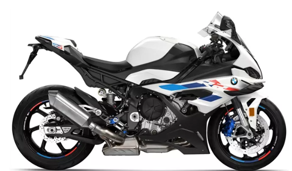

BMW S1000RR
La BMW S1000RR es sinónimo de precisión alemana. Con su icónico diseño asimétrico y su motor de 207 CV, esta superbike ofrece un control total y una potencia que emociona a cada giro del acelerador. Ideal para los amantes de la velocidad pura.